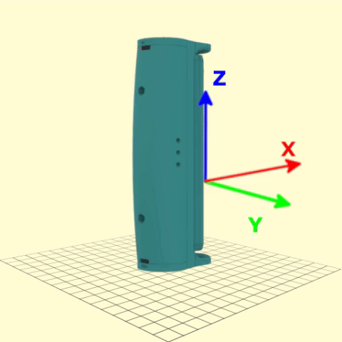

Introduction
Gripable Play Unity is a Unity Package developed by GripAble Ltd. It exposes the Gripable API through Unity, allowing developers with access to a GripAble Play device & Android tablet to start developing games.
Setup
To get started with Gripable Play Unity, follow the steps here.
Releases
Documentation links of specific Gripable Play Unity versions.
Releases
Accessing the Gripable Plugin
Gripable is a static class, accessed to retrieve the main ojects needed to interface with the Gripable Play device. Currently, The Gripable Plugin supports connection of up to two Play devices and the UDP Client Manager.
Play1
Play1 returns a reference to the first Gripable Play device.
GripablePlay gripablePlay = Gripable.Play1;
The first Gripable Play device is accessed via the static attribute Play1, which returns a GripablePlay object.
Play2
The second Gripable Play device is accessed via the static attribute Play2, which returns a GripablePlay object.
Play2 returns a reference to the second Gripable Play device.
GripablePlay secondGripablePlay = Gripable.Play2;
UdpManager
Returns a reference to the UDP Client Manager.
UdpClientManager udpManager = Gripable.UdpManager;
Returns a reference to the UDP Client Manager, used to send serialised data from the connected Gripable Play devices to a machine through UDP.
Connecting and Disconnecting
In order to connect to a Gripable Play device, it must first be discovered by the Android device. This is achieved by turning on the Gripable Play and using the Android OS to scan for Bluetooth devices.
The GripablePlay object provides a wrapper around the underlying Android BLE stack.
SetBluetoothDevice()
void SetBluetoothDevice(BluetoothDeviceAndroid bluetoothDevice);
Sets a Bluetooth Device to the
GripablePlayobject.
string macAdress = "F3:FC:A9:B1:36:BD";
BluetoothDeviceAndroid bluetoothDevice = AndroidHelper.GetBluetoothDevice(macAddress);
gripablePlay.SetBluetoothDevice(bluetoothDevice);
Setting a Bluetooth Device, with a specified MAC address, to the GripablePlay object. Setting a Bluetooth Device for the first time flags the GripablePlay as initialized. Resetting the Bluetooth Device additional times is used to connect the GripablePlay object to a different Gripable Play device (i.e. with a different MAC adress).
Query Parameters
| Parameter | Description |
|---|---|
bluetoothDevice |
Sets BluetoothDeviceAndroid as the Bluetooth Device |
Connect()
bool Connect();
Returns
boolthat represents if a connection attempt has been successfully initiated.
bool connectionInitiated = gripablePlay.Connect();
Initiates a connection attempt. Bluetooth connection is asynchronous and requires a listener for the OnConnected callback or call to the synchronous IsConnected function to check whether the connection attempt was successful.
Return Values
| Returns | Description |
|---|---|
true |
Successfully triggered connection attempt |
false |
Failed to trigger connection attempt |
Disconnect()
bool Disconnect();
Returns a
boolthat represents if a disconnection attempt has been successfully initiated.
bool disconnectionInitiated = gripablePlay.Disconnect();
Initiates a disconnection attempt. Bluetooth connection is asynchronous and requires a listener for the OnDisconnected callback or call to the synchronous IsDisconnected function to check whether the connection attempt was successful.
Return Values
| Returns | Description |
|---|---|
true |
Successfully triggered disconnection attempt |
| false | Failed to trigger disconnection attempt |
Device Info
IsInitialized()
bool IsInitialized();
Returns
trueif theGripablePlayobject has been initialized with a Bluetooth Device.
bool gripableIsInitialized = gripablePlay.IsInitialized();
Returns a bool that represents if the GripablePlay object has been initialized with a Bluetooth Device.
Return Values
| Returns | Description |
|---|---|
true |
The device is initialised |
false |
The device is not initialised |
GetDeviceInfo()
DeviceInfo GetDeviceInfo();
public struct DeviceInfo
{
public string ManufacturerName;
public string ModelNumber;
public string SerialNumber;
public string HardwareRevision;
public string FirmwareRevision;
}
Returns an object containing all the device information.
DeviceInfo deviceInfo = gripablePlay.GetDeviceInfo();
Returns a DeviceInfo object, which contains useful information about the connected device, such as manufacturer, device model or firmware version.
Return Values
| Returns | Description |
|---|---|
DeviceInfo |
Object containing the device information |
empty DeviceInfo |
Empty object if the device is not initialized |
GetMacAddress()
string GetMacAddress();
Returns the MAC address of Bluetooth Device.
string macAddress = gripablePlay.GetMacAddress();
Returns the associated MAC address of the currently set Bluetooth Device.
Return Values
| Returns | Description |
|---|---|
macAddress |
String containing the MAC address of the current Bluetooth Device |
null |
The device is not initialized |
GetConnectionStatus()
ConnectionStatus GetConnectionStatus();
Returns the current connection status of the device.
ConnectionStatus status = gripablePlay.GetConnectionStatus();
Returns an enum that represents the current connection status of the device as one of the following values: CONNECTED, CONNECTING, DISCONNECTED and DISCONNECTING.
Return Values
| Returns | Description |
|---|---|
ConnectionStatus.CONNECTING |
The device is in the middle of a connection attempt |
ConnectionStatus.CONNECTED |
The device is connected |
ConnectionStatus.DISCONNECTING |
The device is in the middle of a disconnection attempt |
ConnectionStatus.DISCONNECTED |
The device is disconnected or not initialised |
IsConnected()
bool IsConnected();
Returns
trueif the device is connected.
bool isConnected = gripablePlay.IsConnected();
Returns a bool that represents the device's current connected state. This is equivalent to checking if the ConnectionStatus is CONNECTED.
Return Values
| Returns | Description |
|---|---|
true |
The device is connected |
false |
The device is connecting, disconnecting, disconnected or not initialised |
IsDisconnected()
bool IsDisconnected();
Returns
trueif the device is disconnected.
bool isDisconnected = gripablePlay.IsDisconnected();
Returns a bool that represents the device's current disconnected state. This is equivalent to checking if the ConnectionStatus is DISCONECTED.
Return Values
| Returns | Description |
|---|---|
true |
The device is disconnected or not initialised |
false |
The device is connecting, connected or disconnecting |
Subscriptions
Subscriptions are used to get data from the appropriate streams.
| Stream | Description |
|---|---|
GripData |
Provides data from the grip sensor |
QuaternionData |
Provides the orientation of the device as a Quaternion object and RPY data |
MotionData |
Provides Linear Acceleration, Angular Velocity and Magnetic Heading |
These can be subscribed to using individual methods or by passing a SubscriptionConfig object
ConfigureSubscriptions()
bool ConfigureSubscriptions(SubscriptionConfig subscription);
Subscribes and Unsubscribes from the streams in the passed configuration. Returns
trueif successful.
Gripable.Play1.ConfigureSubscriptions(new DataProtos.SubscriptionConfig
{
GripData = true,
QuaternionData = false,
MotionData = false
});
Attempts to configure the subscriptions. Returns true if successful.
Query Parameters
| Parameter | Description |
|---|---|
subscriptionConfig |
DataProto containing boolean values for GripData, QuaternionData and MotionData |
Return Values
| Returns | Description |
|---|---|
true |
The subscription configuration was successful |
false |
The subscription configuration failed |
SubscribeToGripData()
bool SubscribeToGripData();
Attempts to subscribe to the device grip data, returns
trueif successful.
bool subscriptionSuccessful = gripablePlay.SubscribeToGripData();
Attempts to subscribe to the device grip data. It returns true if the subscription was successful.
Return Values
| Returns | Description |
|---|---|
true |
The subscription was successful |
false |
The subscription failed |
UnsubscribeFromGripData()
bool UnsubscribeFromGripData();
Attempts to unsubscribe from the device grip data, returns
trueif successful.
bool unsubscriptionSuccessful = gripablePlay.UnsubscribeFromGripData();
Attempts to unsubscribe from the device grip data. It returns true if the unsubscription was successful.
Return Values
| Returns | Description |
|---|---|
true |
The unsubscription was successful |
false |
The unsubscription failed |
IsSubscribedToGripData()
bool IsSubscribedToGripData();
Returns
trueif the device is subscribed to grip data.
bool isSubscribed = gripablePlay.IsSubscribedToGripData();
Returns a bool that represents if the device is subscribed to grip data.
Return Values
| Returns | Description |
|---|---|
true |
The device is subscribed to Grip Data |
false |
The device is not subscribed to Grip Data or not initialised |
SubscribeToQuaternionData()
bool SubscribeToQuaternionData();
Attempts to subscribe the device to quaternion data, returns
trueif successful.
bool subscriptionSuccessful = gripablePlay.SubscribeToQuaternionData();
Attempts to subscribe to the device quaternion data. It returns true if the subscription was successful.
Return Values
| Returns | Description |
|---|---|
true |
The subscription was successful |
false |
The subscription failed |
UnsubscribeFromQuaternionData()
bool UnsubscribeFromQuaternionData();
Attempts to unsubscribe from the device quaternion data, returns
trueif successful.
bool unsubscriptionSuccessful = gripablePlay.UnsubscribeFromQuaternionData();
Attempts to unsubscribe from the device quaternion data. It returns true if the unsubscription was successful.
Return Values
| Returns | Description |
|---|---|
true |
The unsubscription was successful |
false |
The unsubscription failed |
IsSubscribedToQuaternionData()
bool IsSubscribedToQuaternionData();
Returns
trueif the device is subscribed to quaternion data.
bool isSubscribed = gripablePlay.IsSubscribedToQuaternionData();
Returns a bool that represents if the device is subscribed to quaternion data.
Return Values
| Returns | Description |
|---|---|
true |
The device is subscribed to Quaternion Data |
false |
The device is not subscribed to Quaternion Data or is not initialised |
SubscribeToMotionData()
bool SubscribeToMotionData();
Attempts to subscribe to the device motion data, returns
trueif successful.
bool subscriptionSuccessful = gripablePlay.SubscribeToMotionData();
Attempts to subscribe to the device motion data. It returns true if the subscription was successful.
Return Values
| Returns | Description |
|---|---|
true |
The subscription was successful |
false |
The subscription failed |
UnsubscribeFromMotionData()
bool UnsubscribeFromMotionData();
Attempts to unsubscribe from the device motion data, returns
trueif successful.
bool unsubscriptionSuccessful = gripablePlay.UnsubscribeFromMotionData();
Attempts to unsubscribe from the device motion data. It returns true if the unsubscription was successful.
Return Values
| Returns | Description |
|---|---|
true |
The unsubscription was successful |
false |
The unsubscription failed |
IsSubscribedToMotionData()
bool IsSubscribedToMotionData();
Returns
trueif the device is subscribed to motion data.
bool isSubscribed = gripablePlay.IsSubscribedToMotionData();
Returns a bool that represents if the device is subscribed to motion data.
Return Values
| Returns | Description |
|---|---|
true |
The device is subscribed to Motion Data |
false |
The device is not subscribed to Motion Data or not initialised |
Grip Data
GripData contains the sensor information from squeezing the Gripable Play device.
All of these methods require subscription to GripData.
GetGripData()
GripData GetGripData();
public sealed partial class GripData : pb::IMessage<GripData>
{
public int Timestamp;
public float Force;
public float CenterOfPressure;
...
}
Returns a protobuf containing data from the grip sensor.
GripData gripData = gripablePlay.GetGripData();
Returns a GripData protobuf containing data from the grip sensor, including the grip force and timestamp.
Return Values
| Returns | Description |
|---|---|
GripData |
Protobuf containing the grip data |
| empty GripData | Empty GripData protobuf if not subscribed or not initialised |
GetGripForce()
float GetGripForce();
Returns a
floatvalue for Grip Force in Kg.
float gripForce = gripablePlay.GetGripForce();
Returns the force in Kg that is currently being applied to the Gripable Play device. This is equivalent to retrieving the force attribute from a GripData object. It is sampled at 50Hz.
Return Values
| Returns | Min | Max | Description |
|---|---|---|---|
gripForce |
-129f |
128f |
Returns the Grip Force in Kg as a float |
0f |
Returns 0 if the device is not subscribed or not initialised |
GetNormalizeGripForce()
float GetNormalizeGripForce();
Returns a
floatvalue of the normalized Grip Force.
float normalizeGripForce = gripablePlay.GetNormalizeGripForce();
Returns the normalized Grip Force, based on the current Grip Calibration Level.
Return Values
| Returns | Min | Max | Description |
|---|---|---|---|
normalizeGripForce |
0f |
1f |
Returns the normalized Grip Force as a float |
0f |
Returns 0 if the device is not subscribed or not initialised |
Quaternion Data
Quaternion data contains the sensor information about the orientation of the device in 3D space, in the World Frame.
All of these methods require subscription to QuaternionData.
GetQuaternion()
Quaternion GetQuaternion();
Returns a
Quaternionstruct representing the orientation of the device in the world frame.
Quaternion deviceQuaternion = gripablePlay.GetQuaternion();
Returns a Quaternion object representing the orientation of the device in the world frame.
Return Values
| Returns | Description |
|---|---|
deviceQuaternion |
The device orientation in the world frame expressed through a Quaternion object |
Quaternion.identity |
Returns the identity Quaternion (x=0 , y=0 , z=0, w=1) if the device is not subscribed or not initialised |
GetWristRpy()
Wrist RPY (Roll, Pitch, Yaw) contains information about the orientation of the device relative to the user's wrist. Roll, Pitch and Yaw represent rotations of the device around its X, Y and Z axis, respectively, as shown in this picture (not to be mistaken with Euler angles).
WristRpyData GetWristRpy();
public sealed partial class WristRpyData : pb::IMessage<WristRpyData>
{
public float Roll;
public float Pitch;
public float Yaw;
...
}
Returns a protobuf containing RPY orientation data.
WristRpyData rpyData = gripablePlay.GetWristRpyData();
Returns a WristRpyData protobuf representing the device's current orientation as Roll, Pitch and Yaw values.
Return Values
| Returns | Description |
|---|---|
WristRpyData |
Protobuf containing the Wrist RPY data |
| empty WristRpyData | Empty WristRpyData protobuf if not subscribed or not initialised |
GetWristRpyAsVector3()
Vector3 GetWristRpyAsVector3();
Returns a
Vector3object representing the orientation of the device as RPY.
Vector3 rollPitchYaw = gripablePlay.GetWristRpyAsVector3();
Returns a Vector3 object representing the current Roll, Pitch and Yaw of the device.
Return Values
| Returns | Min (per axis) | Max (per axis) | Description |
|---|---|---|---|
Roll/Pitch/Yaw |
0 | 360 | The device roll, pitch and yaw expressed through a Vector3 object |
Vector3.zero |
Returns a zeroed Vector3 if the device is not subscribed or not initialised |
GetNormalizeRpyAsVector3()
Vector3 GetNormalizeRpyAsVector3();
Returns a
Vector3object representing the normalized orientation of the device as RPY.
Vector3 normalizedRpy = gripablePlay.GetNormalizeRpyAsVector3();
Returns a Vector3 object representing the normalized Roll, Pitch and Yaw values of the device.
This is calculated based on the current RPY Calibration Level.
Return Values
| Returns | Min (per axis) | Max (per axis) | Description |
|---|---|---|---|
Roll/Pitch/Yaw |
0 | 1 | The device's normalized roll, pitch and yaw expressed through a Vector3 object |
Vector3.zero |
Returns a zeroed Vector3 if the device is not subscribed or not initialised |
Motion Data
Motion Data contains the sensor information about the movements of the device, collected from the gyroscope, accelerometer and magnetometer.
All of these methods require subscription to MoitonData.
GetLinearAcceleration()
Vector3 GetLinearAcceleration();
Returns a
Vector3object representing the linear acceleration of the device.
Vector3 linearAcceleration = gripablePlay.GetLinearAcceleration();
Returns a Vector3 object representing the linear acceleration of the device alongside its axes, expressed in G.
Return Values
| Returns | Min (per axis) | Max (per axis) | Description |
|---|---|---|---|
linearAcceleration |
-16f |
16f |
A Vector3 representing the linear acceleration of the device, expressed in G |
Vector3.zero |
Returns a zeroed Vector3 if the device is not subscribed or not initialised |
GetAngularVelocity()
Vector3 GetAngularVelocity();
Returns a
Vector3object representing the angular velocity of the device.
Vector3 angularVelocity = gripablePlay.GetAngularVelocity();
Returns a Vector3 object representing the angular velocity of the device alongside its axes, expressed in degrees/sec.
Return Values
| Returns | Min (per axis) | Max (per axis) | Description |
|---|---|---|---|
angularVelocity |
-200f |
200f |
A Vector3 representing the angular velocity of the device, expressed in degrees/sec |
Vector3.zero |
Returns a zeroed Vector3 if the device is not subscribed or not initialized |
GetMagneticHeading()
Vector3 GetMagneticHeading();
Returns a
Vector3object representing the magnetic heading of the device.
Vector3 magneticHeading = gripablePlay.GetMagneticHeading();
Returns a Vector3 object representing the magnetic heading of the device alongside its axes, expressed in microtesla.
Return Values
| Returns | Min (per axis) | Max (per axis) | Description |
|---|---|---|---|
magneticHeading |
-4912f |
4912f |
A Vector3 representing the magnetic heading of the device, expressed in microteslas |
Vector3.zero |
Returns a zeroed Vector3 if the device is not subscribed or not initialised |
Zeroing
It is important that a Gripable Play Device is zeroed before entering into a game. This ensures that the game is playable regardless of the orientation of the device's starting position.
ResetWristRpy()
void ResetWristRpy();
Zeroes the RPY values on the device
gripablePlay.ResetWristRpy();
Sets the Roll, Pitch and Yaw outputs of the device to zero.
ResetWristRpyByGravity()
void ResetWristRpyByGravity();
Zeroes the RPY values of the device and sets it's orientation
gripablePlay.ResetWristRpyByGravity();
Motion Data must be subscribed to in order for this to function. This sets the Roll, Pitch and Yaw values of the device to zero. It also calculates the orientation of the device, inverting the axes accordingly so that inputs to the games are not reversed when the Gripable Play Device is upside-down.
ShowSqueezeToStartDialogue()
SqueezeToStartDialogue ShowSqueezeToStartDialogue(bool resetWristRpy = false);
Shows a squeeze to start dialogue canvas prefab in the game UI and returns a
ShowSqueezeToStartDialoguescript attached to that dialogue
SqueezeToStartDialogue squeezeToStartDialogue = gripablePlay.ShowResetRpyDialogue();
squeezeToStartDialogue.OnClose += DoSomethingWhenDialogueIsClosed();
Shows a dialogue canvas game object to the player prompting them to squeeze. This will close the dialogue with a callback (to start the game). If the resetWristRpy parameter is set to true, the ResetWristRpyByGravity() function is also called, subscribing to Motion Data in the process.
The function returns a reference to the SqueezeToStartDialogue script that is attached to the dialogue game object. This can be used to subscribe to the OnClose action that's invoked when the dialogue closes.
Query Parameters
| Parameter | Description |
|---|---|
resetWristRpy |
optional bool which will trigger the ResetWristRpyByGravity() function when the dialogue closes |
Connection Events
To subscribe a handler to an event, assign a reference to an encapsulated method which has no parameters and no return value.
class MyView : MonoBehaviour {
private GripablePlay _gripablePlay;
Awake(){
// make sure you have a reference to your Gripable Play before trying to assign to it
_gripablePlay.OnConnected += DoSomethingWhenTheGripableConnectes
}
public void DoSomethingWhenTheGripableConnects(){
Debug.Log("YAY, the Gripable has connected")
}
}
GripablePlay has a series of Action Delegate connection events, which are fired at different stages of the connection process.
| Callback Name | Triggered |
|---|---|
OnConnected |
Device has been successfully connected and is ready. |
OnDisconnect |
Device has been fully disconnected. |
OnConnecting |
Device is attempting to connect. |
OnDisconnecting |
Device is attempting to disconnect. |
Calibration
CalibrationLevelenum corresponds to preset calibration levels
public enum CalibrationLevel
{
LOW = 0,
MEDIUM = 1,
HIGH = 2
}
Calibration is used for calculating normalized grip and RPY functions. Force and Rotation Gestures can also be configured based on the set CalibrationLevel.
SetGripCalibrationLevel()
void SetGripCalibrationLevel(CalibrationLevel level);
gripablePlay.SetGripCalibrationLevel(CalibrationLevel.MEDIUM);
Sets the calibration level of the device for normalizing Grip Force.
Query Parameters
| Parameter | Description |
|---|---|
level |
Sets CalibrationLevel for Grip Force |
SetRpyCalibrationLevel()
void SetRpyCalibrationLevel(CalibrationLevel level);
gripablePlay.SetRpyCalibrationLevel(CalibrationLevel.MEDIUM);
Sets the calibration for all RPY axes of the Gripable Play Device. Used for normalize RPY functions. Can be set separately (see below).
Query Parameters
| Parameter | Description |
|---|---|
level |
Sets the same CalibrationLevel for Roll, Pitch and Yaw. |
Individual RPY Calibration
void SetRollCalibrationLevel(CalibrationLevel level);
void SetPitchCalibrationLevel(CalibrationLevel level);
void SetYawCalibrationLevel(CalibrationLevel level);
gripablePlay.SetRollCalibrationLevel(CalibrationLevel.LOW);
gripablePlay.SetPitchCalibrationLevel(CalibrationLevel.MEDIUM);
gripablePlay.SetYawCalibrationLevel(CalibrationLevel.HIGH);
Sets the calibration for individual RPY axes
Query Parameters
| Parameter | Description |
|---|---|
level |
Sets the same CalibrationLevel for Roll/Pitch/Yaw. |
Gestures
To subscribe a handler to an event, assign a reference to an encapsulated method which has no parameters and no return value.
class MyView : MonoBehaviour {
private GripablePlay _gripablePlay;
Awake(){
// make sure you have a reference to your Gripable Play before trying to assign to it
_gripablePlay.OnSqueeze += DoSomethingWhenTheGripableIsSqueezed
_gripablePlay.OnRelease += DoSomethingWhenTheGripableIsReleased
}
public void DoSomethingWhenTheGripableIsSqueezed(){
Debug.Log("YAY, the Gripable has been squeezed")
}
public void DoSomethingWhenTheGripableIsReleased(){
Debug.Log("YAY, the Gripable has been squeezed")
}
}
GripablePlay has a series of Action Delegate gesture events, which are triggered when the Gripable detects specific, predefined movements. In particular, these gesture events divide into Force Gestures and Rotational Gestures.
Force Gestures Callbacks
Force Gestures are triggered when interacting with the finger bar on the Gripable Play, for example when squeezing or releasing the finger bar.
| Callback Name | Triggered |
|---|---|
OnSqueeze |
When the device is squeezed, more specifically when the Grip Force reading goes from a MIN_THRESHOLD to a MAX_THRESHOLD within a given time period. |
OnRelease |
When the device is released, more specifically when the Grip Force reading goes from a MAX_THRESHOLD to a MIN_THRESHOLD within a given time period. |
OnDoubleSqueeze |
When two squeeze events occur within a time threshold. |
OnDoubleRelease |
When two release events occur within a time threshold. |
Rotation Gestures Callbacks
Rotation Gestures are triggered when the user rotates the Gripable Play device through two specified angular regions within a specified time threshold. Currently, all regions are defined by two angles around a specific axis in the sensor frame.
| Callback Name | Triggered |
|---|---|
OnSupination |
When the device is rotated around the X axis in the positive direction. |
OnPronation |
When the device is rotated around the X axis in the negative direction. |
OnUlnar |
When the device is rotated around the Y axis in the positive direction. |
OnRadial |
When the device is rotated around the Y axis in the negative direction. |
OnExtension |
When the device is rotated around the Z axis in the positive direction. |
OnFlexion |
When the device is rotated around the Z axis in the negative direction. |
OnNeutralRoll |
When the device's X rotation has returned to its starting position. |
OnNeutralPitch |
When the device's Y rotation has returned to its starting position. |
OnNeutralYaw |
When the device's Z rotation has returned to its starting position. |
Gesture Types
enum GestureType
{
SQUEEZE,
RELEASE,
FLEXION,
EXTENSION,
PRONATION,
SUPINATION,
ULNAR,
RADIAL,
NEUTRAL_YAW,
NEUTRAL_ROLL,
NEUTRAL_PITCH,
DOUBLE_SQUEEZE,
DOUBLE_RELEASE
}
To configure gestures, the desired gesture type must be specified. The list of available gestures is defined by the GestureType enum.
GetForceGestureConfig()
ForceConfig GetForceGestureConfig(GestureType gestureType);
public sealed partial class ForceConfig : pb::IMessage<ForceConfig>
{
public float ReleaseThreshold;
public float SqueezeThreshold;
public int TimeThreshold;
...
}
Returns a protobuf containing the configuration of the passed force gesture.
ForceConfig forceConfig = gripablePlay.GetForceGestureConfig(GestureType.SQUEEZE);
Returns a ForceConfig protobuf containing the configuration of the specified force gesture.
Query Parameters and Return Values
| Parameter | Returns | Description |
|---|---|---|
gestureType |
ForceConfig |
Protobuf containing the force gesture configuration of the specified force gesture type |
GetRotationGestureConfig()
RotationConfig GetRotationGestureConfig(GestureType gestureType);
public sealed partial class RotationConfig : pb::IMessage<RotationConfig>
{
public RegionConfig RegionA;
public RegionConfig RegionB;
public int TimeThreshold;
...
}
public sealed partial class RegionConfig : pb::IMessage<RegionConfig>
{
public float Start;
public float End;
...
}
Returns a protobuf containing the configuration of the passed rotation gesture.
RotationConfig rotationConfig = gripablePlay.GetRotationGestureConfig(GestureType.EXTENSION);
Returns a RotationConfig protobuf containing the configuration of the specified rotation gesture.
Query Parameters and Return Values
| Parameter | Returns | Description |
|---|---|---|
gestureType |
ForceConfig |
Protobuf containing the configuration of the specified rotation gesture |
GetGestureTimeThreshold()
int GetGestureTimeThreshold(GestureType gestureType);
Returns the time threshold of the specified gesture as an
int.
int timeThreshold = gripablePlay.GetTimeThreshold(GestureType.FLEXION);
Returns the time threshold of the specified gesture as an int.
Query Parameters and Return Values
| Parameter | Returns | Description |
|---|---|---|
gestureType |
int |
time threshold of specified gesture |
ConfigureForceGesture()
bool ConfigureForceGesture(
GestureType gestureType,
float releaseThreshold,
float squeezeThreshold,
int timeThreshold
);
Configures the force and time thresholds for the specified force gesture.
GripablePlay gp = Gripable.Play1;
float releaseForce = 0.5f;
float squeezeForce = 1f;
int timeThreshold = 5000;
gp.ConfigureForceGesture(
GestureType.SQUEEZE,
releaseForce,
squeezeForce,
timeThreshold
);
Configures the force and time thresholds for the specified force gesture. In the example, the squeeze gesture is configured to trigger when 0.5 Kg to at least 1 Kg of pressure force is detected on the finger bar, within 5 seconds.
Query Parameters and Return Values
| Parameter | Returns | Description |
|---|---|---|
gestureType, releaseThreshold, squeezeThreshold, timeThreshold |
true |
Configures the gesture with the specified GestureType with the specified release and squeeze force thresholds (float) and time threshold (int), returns true if the configuration succeeded |
gestureType, releaseThreshold, squeezeThreshold, timeThreshold |
false |
Configures the gesture with the specified GestureType with the specified release and squeeze force thresholds (float) and time threshold (int), returns false if the configuration was incorrect |
ConfigureRotationGesture()
bool ConfigureRotationGesture(
GestureType gestureType,
Region regionA,
Region regionB,
int timeThreshold
);
Configures the regions and the time threshold for the specified rotation gesture.
GripablePlay gp = Gripable.Play1;
Region regionA = new Region(350, 10);
Region regionB = new Region(60, 90);
int timeThreshold = 5000;
gp.ConfigureRotationGesture(
GestureType.EXTENSION,
regionA,
regionB,
timeThreshold
);
Configuring a gesture with ConfigureRotationGesture requires a start region, end region and timeThreshold. Each region is defined by a start and end angle. An angle is considered in the region if it exists between the start and end angle, traced anti-clockwise around a circle.
In the example, the extension gesture is configured such that the start region (neutral position in this case) is set from 350 and 10 degrees (including 0 degrees), and the end region (extended position) is set from 60 to 90 degrees. If the Gripable Play device's pitch changes from a value within the start region to a value in the end region in less than the time threshold, the OnExtension event is triggered and any attached handlers are called.
Query Parameters and Return Values
| Parameter | Returns | Description |
|---|---|---|
gestureType, regionA, regionB, timeThreshold |
true |
Configures the gesture with the specified GestureType with the specified start and end regions (Region) and time threshold (int), returns true if the configuration succeeds |
gestureType, regionA, regionB, timeThreshold |
false |
Configures the gesture with the specified GestureType with the specified start and end regions (Regions) and time threshold (int), returns false if the configuration was incorrect |
ConfigureForceGesturesByCalibration()
void ConfigureForceGesturesByCalibration();
gripablePlay.ConfigureForceGesturesByCalibration();
Configures Squeeze, Release, Double Squeeze and Double Release gestures based on Grip Force CalibrationLevel preset
ConfigureRotationGesturesByCalibration()
void ConfigureRotationGesturesByCalibration();
gripablePlay.ConfigureRotationGesturesByCalibration();
Configures Pronation, Supination, Radial, Ulnar, Extension and Flexion gestures based on RPY CalibrationLevel presets
TriggerGesture()
void TriggerGesture(GestureType gesture)
Triggers the gesture passed as a parameter
gripablePlay.TriggerGesture(GestureType.SQUEEZE)
Used to test firing gesture events without using the Gripable Device.
Query Parameters
| Parameter | Description |
|---|---|
gestureType |
Triggers the gesture with the specified GestureType |
Vibration
SendRumble()
bool SendRumbleCommand(VibrationEffect vibrationEffect);
Sends a command to the Gripable Play Device to vibrate with a particular effect
bool hasVibrated = gripablePlay.SendRumbleCommand(VibrationEffect.STRONG_CLICK_80);
Instructs the Gripable Play Device to vibrate with the specified vibration effect.
Frames of Reference
Two different frames of reference can be used when working with the deice position and orientation: world frame and sensor frame.
World Frame
The world frame of reference is the static frame of reference, independent of the device orientation.
Sensor Frame
The sensor frame is the frame relative to the device itself.

Using UdpClientManager
The UdpClientManager class sends serialised data from the connected Gripable Play device to a machine via UDP. It is accessed via the UdpManager static attribute of the Gripable plugin.
StartClient(ipAddress, port)
void StartClient(string ipAddress, int port);
Starts sending UDP packets to the specified IP address and port.
string ipAddress = "10.0.145.3";
int port = 8088;
udpManager.StartClient(ipAddress, port);
Starts sending packets of serialised data from all the connected Gripable Play devices to the specified IP address and port via UDP.
Query Parameters
| Parameters | Description |
|---|---|
ipAddress, port |
Starts the client with the specified IP address (string) and port (int) |
StopClient()
void StopClient();
Stops sending UDP packets.
udpManager.StopClient();
Stops sending UDP packets to the IP address and port specified in the UdpClientManager, if started.
Query Parameters
| Parameters | Description |
|---|---|
none |
Stops the UDP Client |
IsStarted()
bool IsStarted();
Returns
trueif the UDP Client is currently sending packets.
bool udpStarted = udpManager.IsStarted();
Returns a bool that represents if the UDP Client is currently sending packets.
Return Values
| Returns | Description |
|---|---|
true |
The UDP Client is currently sending packets |
false |
The UDP Client is currently stopped |
The Test View
The Test View is an optional UI tool used to show the data coming from each connected Gripable Play, as well as allowing basic actions to be performed on them. It is responsive to different screen layouts and resolutions and updates automatically every time the screen orientation changes (landscape/portrait mode).
Structure
The Test View shows data and allows actions to be performed on two Gripable Plays at the same time, corresponing to the Gripable.Play1 and Gripable.Play2 objects.
For each of the connected Gripable Plays, several tabs are available in the Test View, grouping together data and actions of similar nature.
In order to open the Test View for one of the two Gripable Plays, the corresponing button on the left (top on portrait mode) must be selected. Similarly, tabs for a specific Gripable Play can be navigated through the buttons on the left (bottom on portrait mode), as shown in the picture below:

The tabs available in the Test View are as follows:
- General tab shows the basic device info, allows for the connection/disconnection of the Gripable Play and to start/stop the UDP Client.
- Grip Data tab shows data from the grip sensor, as well as allowing subscription.
- World Frame Data tab shows orientation data in the world frame, as well as allowing subscription.
- Sensor Frame Data tab shows orientation data in the sensor frame, as well as allowing subscription.
- Motion Data tab shows all motion data coming from the sensors (accelerometer, gyroscope and magnetometer), as well as allowing subscription.
- Force Gestures tab shows a trigger count for the force gestures, as well as allowing their threshold configuration.
- Roll Gestures tab, Pitch Gestures tab and Yaw Gestures tab show a trigger count for the rotation gestures on the three axes, as well as allowing their threshold configuration.
Usage
In order to use the Test View into a project, the TestView prefab (found inside GripablePlayResources/TestView/) must be dragged inside the scene.
This will open up the Test View UI at runtime. The Test View can be closed through the X button on the top left and re-opened by touching anywhere on the screen with at least three fingers at the same time. Once a Gripable Play is connected through the Connection panel in the General tab, all other panels can be used for that Gripable Play.
If the project makes use of just one Gripable Play and does not need the Test View for both Gripable Plays, a Test View for just one Gripable Play can be used instead. In order to do so, instead of the TestView prefab, the PlayView prefab must be dragged into the scene. In this scenario, the PlayView GameObject must also be flagged as the root Test View and the Gripable Play source (Gripable.Play1 or Gripable.Play2) must be specified from the inspector (both options can be found under the TestView settings section). In the picture below, a Play View for Gripable.Play1 is set in the scene:

The Connection panel and the UDP Client panel in the General tab can be configured from the inspector in order to have a default MAC address and IP address and port, respectively. This can be done by expanding the hierarchy of the TestView GameObject in the scene until the GameObjects ConnectionPanel and UdpClientPanel (under GeneralTab and in the first and second rows, respectively), for each PlayView GameObject, as shown in the pictures below.